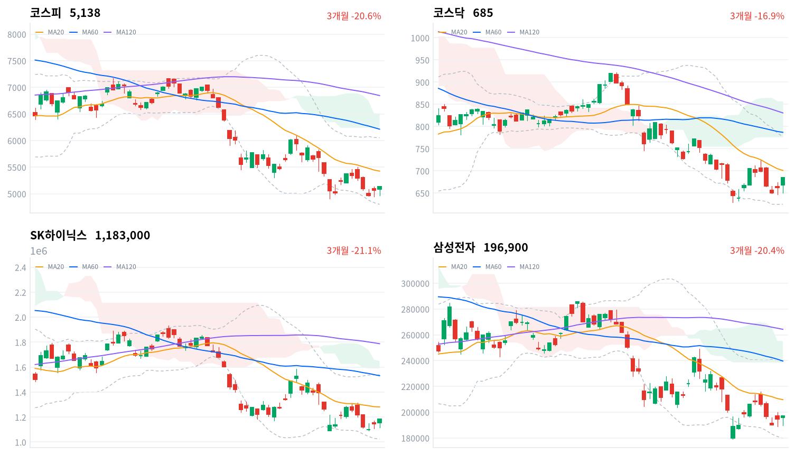

수능일이라 1시간 늦게 열린 코스피는 장중 5,000선을 내줬다가 오후에 회복해 5,137.89로 그날 고가에서 마감했고, 코스닥은 3.32% 올라 더 강했다. 지수는 반도체 대형주가 끌어올렸고, 한중 FTA 후속협상 타결 뒤 엔터·여행·화장품주가 폭넓게 올랐다.
외국인은 코스피를 4,026억원 순매도해(당일 잠정) 오히려 매도를 늘렸다. 외국인이 팔고 국내 매수가 받친 반등이라 AI 하드웨어 매도가 끝났다고 보기는 이르고, 11월 20일 정규장의 외국인 방향을 기다린다.
코스피는 오전 10시 개장 직후 밀려 4,963.61까지 내려갔다가 오후에 돌아섰다. 지수를 가장 많이 끌어올린 종목은 SK하이닉스(+3.41%)와 삼성전자(+1.13%)였고, 11월 18일 한중 정상회담에서 FTA 서비스·투자 후속협상이 실질 타결되자 방송과엔터테인먼트 업종이 10.47% 오르는 등 중국 소비·콘텐츠주가 넓게 올랐다. 외국인은 코스피를 4,026억원 순매도해(당일 잠정) 5거래일 연속 팔았다.
장 마감 뒤 보도는 한한령 완화 기대와 연간 수출 1조달러 돌파를 상승 이유로 들고, 오후 기관 매수 전환이 지수를 끌어올렸다고 설명했다. 중국 소비주 급등에는 이 설명이 맞지만 지수 상승에는 덜 맞는다. 지수 기여가 가장 컸던 종목은 한한령과 거리가 먼 반도체 대형주였고, 하루 합계로 기관 순매수는 197억원(당일 잠정)에 그쳤다. 오후 반등을 기관이 만들었는지는 장중 투자자별 자료가 없어 확인되지 않는다. 수출 1조달러는 산업부가 이미 11월 중 달성을 전망한 숫자라 새 정보의 크기도 작다. 장 전 증권사 견해는 외국인 매도가 잦아드는 쪽을 봤다. 키움증권 한지영 연구원은 외국인 순매도 강도가 약해지고 코스피가 악재를 상당 부분 반영했다는 점을 근거로, 앤트로픽 상장 이후 외국인의 자금 확보 부담이 완화되며 매도 압력이 줄어들 가능성을 제시했다. 이날 외국인 매도는 전날 3,405억원보다 오히려 늘었다. 외국인이 앞으로 무엇을 할지 시장이 어떻게 값을 매겼는지 보여 줄 옵션·선물 자료는 없다.
우리는 이 반등을 AI 하드웨어 위험 축소가 끝난 신호보다, 외국인 매도가 이어지는 가운데 국내 매수와 한한령 기대가 만든 업종 순환으로 본다. 코스닥이 3.32% 올라 코스피보다 강했고, 크고 넓게 오른 업종은 반도체 밖의 엔터·여행·화장품·전기장비였다. 반도체도 올랐지만 외국인이 5거래일째 판 날이라 반도체 수요 전망이 다시 주가에 들어갔다고 보기는 이르다. 다른 설명도 있다. 하나증권은 반도체에 집중된 외국인 매도의 핵심 원인으로 MSCI 지수의 25% 비중 상한을 꼽았다. 이 설명대로라면 외국인 매도는 지수 비중을 맞추는 기계적 매도라 방향을 알려 주지 않고, 국내 매수가 바닥을 만든 지금 위험 축소는 이미 끝났을 수 있다. 다만 같은 보고서는 11월 정기 변경의 영향이 중립 수준으로 줄었다고 봐, 이날 매도를 그 요인으로 설명하는 힘은 약하다. 업종별 외국인 순매매 자료가 없어 이날 자료로는 두 설명을 구분하기 어렵다. 두 설명은 11월 20일 외국인 코스피 순매수 방향과, 11월 20일 코스피 종가가 5,253.52를 넘는지 4,947.48 아래로 내려가는지로 구분한다.
새로 제안할 상품은 없다. 한중 수혜주 급등은 이익 재평가의 시작보다 정상회담 직후의 기대 매수에 가깝다고 본다. 매출로 이어지려면 협정 서명·발효와 중국 당국의 공연·콘텐츠 승인이 남아 있고, 2025년 10월 시진핑 주석 방한과 2026년 1월 대통령 방중 때도 같은 종목들이 함께 올랐다는 보도가 나왔다. 이 판단은 11월 26일 종가로 확인하고, 그 사이 중국 당국의 승인 공지가 나오면 이익 재평가 쪽 근거로 본다. 이 종목들은 해외주식 펀드의 미국 참조 지수와 직접 이어지지 않는 국내 재료다. 가장 가까운 결정적 일정은 11월 20일이다. 미국 시간 19일 앤트로픽의 나스닥 첫 거래가 끝난 뒤 그날 정규장에서 외국인이 코스피 순매수로 돌아서는지를 기다린다.
코스피가 11월 19일 기준 일목 전환선 5,224 위에서 마감하면 반등을 외국인 매도 속 업종 순환으로만 보는 판단을 철회하고, AI 하드웨어 위험 축소가 끝났다는 설명을 우선 설명으로 본다.
출처: 아시아경제, 인더스트리뉴스, PPSS, 이코노미스트, 연합뉴스, Investing.com
11월 18일 미국 정규장은 엇갈렸다. 나스닥은 0.42% 올랐지만 S&P 500은 0.23%, 다우는 1.11% 내렸다. 아시아는 대체로 약했다. 대만가권이 4.40%, 항셍이 1.95%, 상해종합이 0.28% 내렸고 닛케이만 0.71% 올라 네 지수 평균은 -1.48%였다. 코스피는 이 평균보다 2.87%포인트 강했다. 대만가권 급락의 당일 원인은 확인되지 않았다.
수능 시험일이라 증시는 평소보다 1시간 늦은 오전 10시에 열렸다. 코스피는 전일 종가 5,067.44보다 0.45% 높은 5,090.04에서, 코스닥은 0.83% 높은 668.31에서 출발했다. 한국 장 시간대에 S&P 500 선물은 0.51%, 나스닥100 선물은 0.84% 올랐다. 선물 등락은 평소 정규장 시간인 09:00~15:30 기준으로 잰 값이라 늦춰진 마감 전 1시간은 담기지 않았다.
코스피는 출발 직후 밀려 4,963.61까지 내려가며 5,000선을 내줬고, 오후에 회복해 그날 고가인 5,137.89에서 마감했다. 코스닥도 650.39까지 밀린 뒤 고가 684.81로 끝나 같은 모양을 그렸다. 원/달러는 좁은 범위에 머물렀다.
반도체 대형주가 지수를 끌어올리고, 한중 FTA 후속협상 타결을 재료로 엔터·여행·화장품이, 재료가 확인되지 않은 전력기기가 함께 오른 날이다. 오후 기관 매수가 상승 전환을 이끌었다는 보도가 나왔지만 장중 투자자별 흐름과 시간외 거래 자료가 없어 이 순서는 확인하지 못한다. 은행·자동차부품과 삼성에스디에스는 반등장에서 내렸다.
출처: 아시아경제, 인더스트리뉴스, PPSS
코스피는 1.39% 오른 5,137.89, 코스닥은 3.32% 오른 684.81로 마감했다. 코스닥이 코스피의 두 배 넘게 올라, 중소형 콘텐츠·소비주가 많은 쪽에서 반등 폭이 더 컸다. 코스피는 장중 내준 5,000선을 되찾았지만 20일선(5,426)보다는 여전히 5.3% 낮다.
| 지수 | 종가 | 등락률 | 시가 | 고가 | 저가 | 전일 종가 |
|---|---|---|---|---|---|---|
| 코스피 | 5,137.89 | +1.39% | 5,090.04 | 5,137.89 | 4,963.61 | 5,067.44 |
| 코스닥 | 684.81 | +3.32% | 668.31 | 684.81 | 650.39 | 662.81 |
해석을 바꾸는 변곡점은 오후 1시 무렵이다. 개장이 늦어 봉 시각도 평소보다 1시간 밀렸는데, 코스피는 정오까지 5,000선 부근에서 머물다 13시 봉에서 5,070으로 올라섰고 그 뒤 마감까지 거의 쉬지 않고 올라 마지막 봉이 고가였다. 장중 저가 4,963.61은 11월 16일 종가 대비 -3% 선(4,947.48)보다 16포인트 위에서 멈췄다. 시가 갭을 한 번 지운 뒤 오후 내내 다시 만든 상승이라, 이날 상승분은 모두 오후 매수에서 나왔다.
| 주체 | 순매수(억원) |
|---|---|
| 개인 | -693 |
| 외국인 | -4,026 |
| 기관 | +197 |
| 주체 | 순매수(억원) |
|---|---|
| 개인 | -32 |
| 외국인 | -2,143 |
| 기관 | +2,200 |
외국인 매도는 줄지 않고 늘었다. 외국인은 코스피를 4,026억원 순매도해(전일 3,405억원 순매도, 당일 잠정) 11월 13일부터 5거래일 연속 팔았다. 지수가 장중 저점에서 3.5% 오른 날에도 매도 규모가 전날보다 커져, 이날 반등은 외국인 매수로 만들어지지 않았다.
세 주체 가운데 코스피를 산 쪽은 기관뿐이었고 그마저 197억원 순매수(전일 4,926억원 순매수)로 작았다. 개인은 693억원을 순매도했다(전일 6,169억원 순매도). 세 주체를 합치면 4,522억원 순매도이고 투자자별 순매수의 합은 0이므로, 그만큼은 표에 없는 기타법인 등이 순매수한 셈이다(당일 잠정). 그 매수가 어느 업종으로 갔는지는 세부 주체·업종별 자료가 없어 알 수 없다.
코스닥에서는 기관이 2,200억원을 순매수해(전일 1,794억원 순매수) 외국인 순매도 2,143억원(전일 497억원 순매도)을 거의 그대로 받았다. 외국인은 표의 10거래일 내내 코스닥을 팔았고, 코스닥이 3.32% 오른 날 순매수한 주체는 기관이었다.
코스피 투자자별 순매수(11월 19일, 당일 잠정, 억원): 개인 −693 + 외국인 −4,026 + 기관 +197 = −4,522. 장중 저점 대비 종가: 5,137.89 ÷ 4,963.61 − 1 = +3.51%.
장중 누적 수급과 프로그램 매매는 받을 수 있는 자료가 없어 싣지 않는다.
| 순위 | 종목/ETF | 구분 | 거래대금 | 비고 |
|---|---|---|---|---|
| 1 | SK하이닉스 | 개별주 | 2.97조원 | - |
| 2 | 삼성전자 | 개별주 | 2.41조원 | - |
| 3 | 반도체 테마 ETF | 테마·롱 | 1.20조원 | 28종 합산 |
| 4 | 삼성전기 | 개별주 | 0.79조원 | - |
| 5 | 삼성전자우 | 개별주 | 0.53조원 | - |
| 6 | KODEX CD금리액티브(합성) | 단기금리·현금성 | 0.37조원 | - |
| 7 | 삼성SDI | 개별주 | 0.26조원 | - |
| 8 | SK스퀘어 | 개별주 | 0.26조원 | - |
| 9 | 하이브 | 개별주 | 0.22조원 | - |
| 10 | 2차전지 테마 ETF | 테마·롱 | 0.16조원 | 14종 합산 |
단위 백만원 원본을 조 단위로 환산했다. 같은 기초자산 ETF는 방향별로, 같은 테마 섹터 ETF는 테마별로 묶고 지수·해외 ETF는 제외했다.
거래는 반도체에 몰렸고 주가도 함께 올랐다. SK하이닉스(2.97조원)와 삼성전자(2.41조원)가 1·2위, 반도체 테마 ETF 28종 합산(1.20조원)이 3위였다. 엔비디아 협력 보도가 이어진 삼성전기는 0.79조원으로 4위였다. 한중 수혜주 가운데 10위 안에 든 종목은 하이브(0.22조원) 하나다. 신세계·하나투어·아모레퍼시픽처럼 9~17% 오른 종목들은 거래대금이 하이브에도 못 미쳐, 업종 지수를 크게 끌어올린 종목들의 거래 규모는 반도체보다 훨씬 작았다. 2차전지 테마 ETF 14종 합산(0.16조원)이 10위에 들었지만 2차전지 섹터는 이날 내렸고, 투자자별 자료가 없어 어느 방향의 거래였는지는 알 수 없다.
업종 분류로 보면 반등은 중국 소비·콘텐츠와 전력기기에서 가장 넓었다. 방송과엔터테인먼트(+10.47%, 58개 중 42개 상승), 호텔·레스토랑·레저(+6.01%, 20개 중 17개), 화장품(+4.45%, 64개 중 53개), 백화점과일반상점(+3.64%, 14개 중 13개)이 넓게 올랐고 전기장비(+4.74%)도 35개 가운데 28개가 올랐다. 반도체와반도체장비 업종은 2.26% 올라 175개 가운데 137개가 함께 올랐다.
전자장비와기기(+6.90%, 105개 중 72개)와 소프트웨어(+4.31%, 76개 중 50개)는 일부 종목이 평균을 끌어올린 좁은 상승이었다. 대표 ETF 기준 소프트웨어 섹터는 오히려 1.35% 내려, NAVER(-1.17%)·삼성에스디에스(-7.14%) 같은 대형주는 약하고 중소형주가 업종 평균을 올린 날이다.
대표 ETF 12개 섹터 가운데 오른 섹터는 6개뿐이었다. 반도체(+4.17%)가 가장 강했고 2차전지(-1.46%)·소프트웨어(-1.35%)·은행(-1.06%)이 가장 약했다. 반도체 섹터는 하루 반등에도 1주일 -5.89%, 1개월 -18.20%로 낙폭의 일부만 되돌렸다. 지난주 하락장을 받친 은행은 2거래일 연속 반등장에서 내렸지만 1주일로는 아직 0.87% 올라 있다.
반도체 대형주가 지수를 가장 많이 끌어올렸다(SK하이닉스 +3.41%, 삼성전자 +1.13%). 두 종목 고유의 재료는 확인되지 않았다. 같은 날 KB증권은 미국 AI 규제 우려에도 중국의 AI 인프라 투자가 메모리 수요를 떠받친다며 두 종목을 최선호주로 유지했다. 시장 일각에서는 SK하이닉스가 청주 사업장에 차세대 HBM 제조 장비인 하이브리드 본더 2대를 들여와 검증 중인 것을 두고, 두 곳 장비를 동시에 가동해 수율과 신뢰성을 조기에 확보하려는 투트랙 전략이라는 시각도 있었다. SK하이닉스 지분을 가진 SK스퀘어도 4.23% 올랐다.
현대모비스는 반등장에서 4.07% 내려 지수를 끌어내렸다. 확인된 재료는 없다. 같은 그룹의 기아도 0.76% 내렸고 현대차는 0.19% 오르는 데 그쳤다.
은행주는 지수와 반대로 내렸다(KB금융 -2.24%, 신한지주 -1.61%, 우리금융지주 -1.24%, 하나금융지주 -0.24%). 금융주 고유의 확인된 재료는 없다. 보험주 삼성화재도 3.14% 내렸다.
AI 부품에서는 삼성전기가 9.26% 올라 2거래일째 크게 상승했다. 11월 18일 발표된 엔비디아와 삼성전기의 MLCC 분야 협력 확대가 이유로 거론됐다는 보도가 나왔다. 코리아써키트는 7.01% 올랐지만 확인된 재료는 없고, 같은 기판 업종의 대덕전자(+4.43%)와 이수페타시스(+3.88%)도 함께 올랐다.
하이브는 13.69% 올라 엔터주 급등을 이끌었다. 재료는 한중 FTA 후속협상에서 중국이 약속한 콘텐츠 최혜국 대우와 그에 따른 한한령 완화 기대다. 같은 재료로 하나투어(+16.75%)·한국화장품제조(+15.66%)·제주항공(+11.47%)·파라다이스(+10.51%)·신세계(+10.47%)·아모레퍼시픽(+9.03%)이 함께 올랐다.
묶음 밖에서는 전력기기가 강했고(HD현대일렉트릭 +8.63%, 효성중공업 +6.90%, LS ELECTRIC +4.14%), 삼성에스디에스(-7.14%)와 SK이노베이션(-5.48%)은 크게 내렸다. 다섯 종목 모두 이날 움직임을 설명하는 재료는 확인되지 않았다.
출처: 뉴스1, 비즈니스포스트, 뉴스클레임, 서울경제, 뉴스핌
국고채 금리는 주식이 오른 날 장기물 중심으로 내렸다. 3년물은 2.0bp 내린 3.716%, 10년물은 3.3bp 내린 3.942%로 마감했다.
| 지표 | 금리 | 전일比(bp) | 기준일 |
|---|---|---|---|
| 국고채 3년 | 3.716% | -2.0 | 2026-11-19 |
| 국고채 10년 | 3.942% | -3.3 | 2026-11-19 |
| CD 91일 | 3.38% | +1.0 | 2026-11-19 |
| 회사채 AA- 3년 | 4.39% | -1.9 | 2026-11-19 |
| 한국은행 기준금리 | 3.00% | 0.0 | 2026년 10월 기준 |
10년물과 3년물의 금리차는 22.6bp로 1.3bp 좁혀졌고, 최근 2년(533거래일) 가운데 좁은 쪽 21% 안에 있다. 주식이 오른 날 장기 금리가 더 내려, 수출 1조달러 소식이 장기 성장 기대를 끌어올렸다는 흔적은 채권에 없다. 회사채 AA- 3년물은 1.9bp 내려 국고채 3년물과 거의 같은 폭으로 움직였고, 둘의 금리차는 67.4bp(+0.1bp)로 최근 2년(533거래일) 가운데 넓은 쪽 17% 안에 머물렀다. 주식 반등이 회사채 시장의 위험 가격까지 낮추지는 못했다.
3년물과 기준금리의 차는 71.6bp로 최근 2년(533거래일)의 한가운데쯤이다. 이 차에는 정책 경로와 기간프리미엄이 섞여 있어, 11월 26일 금통위를 앞둔 시장 기대를 그대로 보여 주지는 않는다.
국고채 10년 3.942%, 3년 3.716%(11월 19일): (3.942 − 3.716) × 100 = 22.6bp, 변화 −1.3bp(= −3.3bp − (−2.0bp)). 회사채 AA- 3년 4.39%: (4.39 − 3.716) × 100 = 67.4bp, 변화 +0.1bp(= −1.9bp − (−2.0bp)).
| 미국 참조 지수 | 구분 | 관측 | 등락률 | 업종 내 상승 비율 | 기준일 |
|---|---|---|---|---|---|
| 반도체·AI 하드웨어 | 업종 | 반도체와반도체장비 | +2.26% | 78% | 11/19 |
| 반도체·AI 하드웨어 | 종목 | SK하이닉스 | +3.41% | – | 11/19 |
| 반도체·AI 하드웨어 | 종목 | 삼성전자 | +1.13% | – | 11/19 |
| 반도체·AI 하드웨어 | 지수 | 대만가권 | -4.40% | – | 11/19 |
| 전력망 | 업종 | 전기장비 | +4.74% | 80% | 11/19 |
| 전력망 | 종목 | HD현대일렉트릭 | +8.63% | – | 11/19 |
| 전력망 | 종목 | LS ELECTRIC | +4.14% | – | 11/19 |
| 전력망 | 종목 | 효성중공업 | +6.90% | – | 11/19 |
| 방산 | 업종 | 우주항공과국방 | +0.63% | 69% | 11/19 |
| 방산 | 종목 | 한화에어로스페이스 | -0.16% | – | 11/19 |
| 산업재 | 업종 | 기계 | +2.18% | 70% | 11/19 |
| 산업재 | 업종 | 조선 | +1.33% | 71% | 11/19 |
| 산업재 | 종목 | HD현대중공업 | +2.35% | – | 11/19 |
| 금속·광업 | 업종 | 철강 | -0.30% | 56% | 11/19 |
| 금속·광업 | 종목 | POSCO홀딩스 | -0.76% | – | 11/19 |
| 금융 | 업종 | 증권 | 0.00% | 49% | 11/19 |
| 금융 | 종목 | KB금융 | -2.24% | – | 11/19 |
| 금융 | 종목 | 신한지주 | -1.61% | – | 11/19 |
| 소프트웨어 | 업종 | 소프트웨어 | +4.31% | 66% | 11/19 |
| 소프트웨어 | 종목 | NAVER | -1.17% | – | 11/19 |
| 소프트웨어 | 종목 | 카카오 | +0.31% | – | 11/19 |
| 에너지 | 종목 | SK이노베이션 | -5.48% | – | 11/19 |
| 일본 | 지수 | 닛케이 | +0.71% | – | 11/19 |
| 중국 | 지수 | 항셍 | -1.95% | – | 11/19 |
| 중국 | 지수 | 상해종합 | -0.28% | – | 11/19 |
원/달러는 한국장 시간대에 1,326.78~1,332.85원의 6원 남짓한 범위에서 움직이다 1,329.48원(15:30)에서 끝났다. 외국인이 5거래일째 주식을 팔았는데도 원화가 크게 흔들리지 않아, 해외주식 펀드가 대기 자금으로 달러를 사는 비용이 주식 매도 때문에 튀지는 않았다.
반도체는 한국과 대만이 반대로 움직였다. 한국 반도체와반도체장비 업종이 2.26% 오른 날 대만가권은 4.40% 내렸고, 대만 급락의 원인은 확인되지 않았다. 같은 아시아 반도체가 하루 안에 엇갈려, 이날 한국 반도체 반등을 미국 반도체 테마의 가격 흐름을 판단할 근거로 쓰기는 어렵다. 전력망은 HD현대일렉트릭(+8.63%)·효성중공업(+6.90%)·LS ELECTRIC(+4.14%)이 반도체 대형주보다 크게 올랐지만 종목 재료가 확인되지 않았다. 11월 19일 미국 정규장에서 전력 설비주가 함께 오르는지가 이 반등이 한국만의 것인지를 보여 준다.
11월 18일 선전 정상회담에서 실질 타결된 한중 FTA 서비스·투자 후속협상이 이날 처음 정규장 가격에 들어갔다. 중국은 한국 영화·온라인 게임 등 콘텐츠 분야에 최혜국 대우와 사전 심사 비차별 원칙을 적용하기로 했고, 이재명 대통령이 문화·콘텐츠 교류의 단계적 확대를 제안하자 시진핑 주석이 점진적 추진에 동의했다는 보도가 나왔다.
한국 콘텐츠가 중국에서 다른 나라와 같은 심사 조건을 받으면 공연·판권 매출이 늘고, 단체관광이 다시 늘면 면세·카지노·백화점 매출이 는다. 이날 넓게 오른 엔터·호텔·레저·화장품·백화점은 그 방향과 같다. 남은 단계는 협정의 정식 서명·발효와 중국 당국의 한국 아티스트 공연·콘텐츠 승인이고, 둘 다 일정 미확정이다. 승인 공지가 나오면 기대가 매출로 이어지는 첫 확인이 된다.
청와대 성장경제비서관은 19일 올해 연간 수출액이 사상 처음 1조달러를 넘었다고 밝혔다는 보도가 나왔다. 산업부가 11월 1일 10월 누적 9,300억달러를 근거로 11월 중 달성을 전망했던 숫자라, 이날 새로 알려진 정보의 크기는 작다. 반도체 중심 수출주의 이익 흐름을 확인해 주는 재료지만, 이날 반도체 상승은 다른 재료와 섞여 이 소식의 반응만 따로 떼어 내기 어렵다. 다음 확인은 통상 매월 1일 나오는 산업부 11월 수출입동향이다(12월 1일 예정, 발표 시각 미확인).
트럼프 대통령과 시진핑 주석이 19일 선전에서 올해 세 번째 대면 회담을 열어 경제협력 확대를 확인했고, 트럼프 대통령은 중국에 미국산 농산물 추가 구매를 요구했다는 보도가 나왔다. 미·중 통상 불확실성이 줄면 중국 매출 비중이 큰 한국 수출주의 할인이 줄 수 있지만, 이날 한국 업종에서 이 재료의 반응은 따로 보이지 않았다. 후속 무역 협의 일정은 미확정이다.
미국 중간선거 뒤 민주당이 상·하원을 장악하면서 AI·데이터센터 규제가 강화될 수 있다는 분석이 나왔다. 스미토모미쓰이DS자산운용 이치카와 마사히로 전략가는 연방 규제법은 대통령 거부권 때문에 실제 법이 되기 어렵고 주·지방 정부의 독자 규제가 변수라고 진단했다. 시장 일각에서는 래리 핑크 블랙록 CEO가 데이터센터 모라토리엄이 도입되면 경기 침체 위험이 있다고 우려했다는 의견도 있었다. 규제로 미국 데이터센터 투자가 늦어지면 한국 메모리와 전력기기의 수주 기대가 함께 낮아진다. 이날 새 규제 조치는 없었고, 앤트로픽은 미국 시간 19일 나스닥에서 거래를 시작한다.
출처: 서울경제, 인더스트리뉴스, 뉴스1, 머니투데이방송, 연합뉴스, 한국경제, 조선일보
11월 18일 판단은 유효하다. 코스피가 5,137.89로 마감해 11월 18일 기준 일목 전환선 5,208 아래에 머물렀으므로, 엔비디아 실적 뒤 반등을 AI 하드웨어 매도의 끝으로 보지 않은 판단을 그대로 둔다. 기다린 조건은 11월 19일 정규장에서 외국인이 코스피 순매수로 돌아서는지였고, 외국인은 4,026억원을 순매도해(당일 잠정) 조건은 충족되지 않았다. 다만 반등의 이유는 해석을 수정한다. 어제는 외국인 매도 압력이 줄어든 결과로 봤지만 이날 매도 규모는 전날 3,405억원보다 커졌는데도 지수가 올라, 반등을 받친 것은 외국인 매도의 둔화가 아니라 국내 매수와 업종 순환이다. 지수 철회 조건과 별도로 사전에 정한 11월 20일 종가 검증은 이어 간다. 11월 16일 종가 5,100.50 대비 +3% 초과(5,253.52 초과)면 위험 축소, -3% 미만(4,947.48 미만)이면 하락 재개로 닫는 기준이고, 코스피는 11월 16일보다 0.73% 높아 두 선 사이에 있다.
| 판단(세운 날) | 오늘 결과 | 상태 |
|---|---|---|
| 한한령 수혜주 급등은 하루 기대 매수(11월 19일) | 하이브 +13.69%(189,400원) | 새로 세움 — 11월 26일 종가 |
| 메모리 대형주 격차는 하루 위험 회피(11월 12일) | SK하이닉스−삼성전자 -0.33%포인트 | 판단 보류 — 기준 안에서 닫음 |
| AI 하드웨어 급락은 실적 앞 위험 축소(11월 16일) | 코스피 11월 16일 대비 +0.73% | 판단 보류 — 11월 20일 종가 |
| 은행주 동반 상승은 하루 방어 매수(11월 13일) | KB금융−코스피 -0.95%포인트 | 판단 보류 — 11월 20일 종가 |
| 전력기기 급락은 AI 인프라 동반 매도(11월 17일) | HD현대일렉트릭−코스피 +6.37%포인트 | 판단 보류 — 11월 24일 종가 |
| 삼성전기 급등은 고객 확인 이익 재평가(11월 18일) | 삼성전기−코스피 +7.87%포인트 | 판단 보류 — 11월 25일 종가 |
한한령 수혜주 판단(11월 19일)은 오늘 세웠다. 11월 19일 KRX 종가(하이브 189,400원, 코스피 5,137.89) 대비 11월 26일 KRX 종가 기준 하이브 수익률이 코스피 수익률보다 3%포인트 넘게 낮으면 하루 기대 매수 해석을 뒷받침하고, 3%포인트 넘게 높으면 이익 재평가 해석을 우선 설명으로 보고 철회한다. 차이가 그 범위 안이면 어느 쪽으로도 판단하지 않고 닫는다. 기간 중 중국 당국의 한국 공연·콘텐츠 승인 공지가 나오면 가격과 무관하게 재평가 쪽 근거로 본다. 하이브 한 종목으로 재는 기준이라, 관광 매출에 기대는 하나투어·신세계 같은 종목의 흐름은 따로 확인하지 않는다.
메모리 대형주 격차 판단(11월 12일)은 미리 정한 범위 안에서 결론 없이 닫는다. 11월 12일 이후 SK하이닉스는 5.66%, 삼성전자는 5.34% 내려 차이가 -0.33%포인트로 ±3%포인트 안이다. 그 사이 엔비디아 실적과 코스피 급락·반등이 두 종목을 함께 움직여, 엔비디아 의존도에 따른 상대 재평가도 하루 위험 회피도 가격으로는 확인되지 않았다.
전력기기 판단(11월 17일)은 HD현대일렉트릭이 이날 8.63% 올라 11월 17일 이후 코스피보다 6.37%포인트 앞서, 판정일을 앞두고 AI 인프라 동반 매도 해석을 뒷받침하는 범위에 있다. 다만 이날 급등의 종목 재료는 확인하지 못해 방향이 맞아도 이유까지 확인했다고 보지는 않고, 북미 수주 취소·지연 공시는 나오지 않았다. 삼성전기 판단(11월 18일)은 확인 기간 첫 세션에 삼성전기가 코스피보다 7.87%포인트 앞섰지만, 엔비디아 협력의 계약 규모와 시점은 여전히 확인되지 않았다. 은행주 판단(11월 13일)은 KB금융이 반등일에 2.24% 내려 코스피와의 차이가 -0.95%포인트로 벌어졌고, 하루 방어 매수 쪽 기준인 -3%포인트까지는 아직 거리가 있다.
수익률 = (11월 19일 종가 ÷ 기준 종가 − 1) × 100. SK하이닉스 1,254,000원 → 1,183,000원 −5.66%, 삼성전자 208,000원 → 196,900원 −5.34%, 차 −0.33%포인트. 코스피 5,100.50 → 5,137.89 +0.73%. KB금융 159,000원 → 152,900원 −3.84%, 코스피 5,290.53 → 5,137.89 −2.89%, 차 −0.95%포인트. HD현대일렉트릭 378,500원 → 415,500원 +9.78%, 코스피 4,968.48 → 5,137.89 +3.41%, 차 +6.37%포인트. 삼성전기 810,000원 → 885,000원 +9.26%, 코스피 +1.39%, 차 +7.87%포인트.
| 시점 | 확인할 것 | 가르는 판단 |
|---|---|---|
| 11월 20일 정규장 | 앤트로픽 첫 거래 뒤 외국인 코스피 순매수 방향 | 국내 매수 반등인가, 위험 축소의 끝인가 |
| 11월 20일 종가 | 코스피 5,253.52 초과 또는 4,947.48 미만 | 위험 축소인가, 하락 재개인가 |
| 11월 20일 종가 | KB금융−코스피 수익률 차(11월 13일 대비) | 하루 방어 매수인가, 금융주 재평가인가 |
| 11월 24일 종가 | HD현대일렉트릭−코스피 수익률 차(11월 17일 대비) | AI 인프라 동반 매도인가, 수요 하향인가 |
| 11월 25일 종가 | 삼성전기−코스피 수익률 차(11월 18일 대비) | 고객 확인 재평가인가, 하루 테마 급등인가 |
| 11월 26일 종가 | 하이브−코스피 수익률 차(11월 19일 대비) | 하루 기대 매수인가, 이익 재평가인가 |
한중 FTA 정식 서명과 중국 당국의 공연 승인은 일정 미확정이고, 11월 26일 금통위와 12월 1일 11월 수출입동향은 위 판단의 배경으로 함께 본다.

코스피·코스닥·SK하이닉스·삼성전자 3개월 일봉에 이동평균(20·60·120)·볼린저밴드·일목균형표 구름대를 겹쳐 그렸다. 상승 캔들은 녹색, 하락 캔들은 적색이다.
| 자산 | 위치(이평·구름) | 가까운 저항 | 가까운 지지 |
|---|---|---|---|
| 코스피 | 전환선 아래, 세 이동평균·구름 아래(역배열) | 전환선 5,224 → 20일선 5,426 | 20일 저점 4,911 → 볼린저 하단 4,800 |
| 코스닥 | 전환선 위, 20일선·구름 아래(역배열) | 20일선 701 → 기준선 719 | 전환선 679 → 20일 저점 629 |
| SK하이닉스 | 전환선 아래, 세 이동평균·구름 아래(역배열) | 전환선 120만원 → 20일선 128만원 | 20일 저점 109만원 |
| 삼성전자 | 전환선 아래, 세 이동평균·구름 아래(역배열) | 전환선 20만2천원 → 20일선 21만원 | 볼린저 하단 18만원 → 20일 저점 17만9천원 |
코스피는 장중 5,000선을 되찾았지만 11월 19일 기준 전환선 5,224 아래에서 세 이동평균과 구름 아래의 역배열을 이어 가고 있다. 위로는 전환선을 종가로 넘어야 하락 흐름이 멈췄다고 볼 수 있고, 아래로 20일 저점 4,911을 내주면 11월 19일 기준 볼린저 밴드 하단 4,800이 다음 지지다. 코스닥은 전환선 679 위에서 마감해 네 자산 가운데 유일하게 전환선 위에 있다.
위 레벨은 이동평균·볼린저밴드·일목균형표와 스윙 고저를 11월 19일 종가로 기계적으로 계산한 값이며 투자 권유가 아니다. 종가에서 10% 넘게 떨어진 레벨은 싣지 않았다.